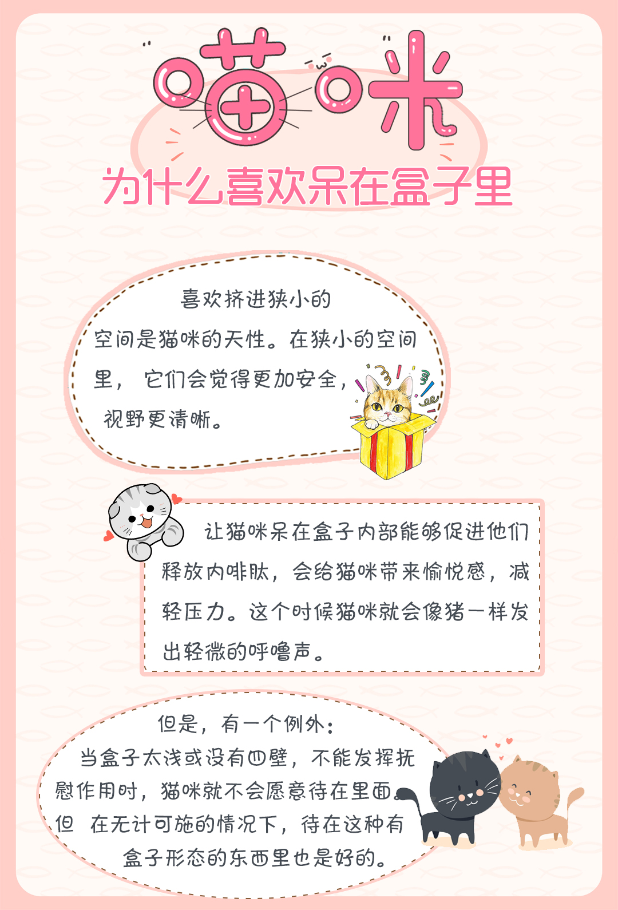

选择物象，独辟蹊径
李贺是继屈原、李白之后，中国文学史上又一位颇享盛誉的积极浪漫主义诗人。 他的诗对统治者的昏庸、腐朽，藩镇割据的黑暗现实，多所针砭； 对下层人民的哀怨、痛苦亦多有同情，政治上具有进步倾向。 在艺术方面，他的诗调高气峻，或如云崩雪涌，奇峭浪漫； 或如明霞秀月，清丽璀璨。在想象的奇特、构思的精巧、语言的精辟等方面，极富独创性，在中唐别树一帜，有开拓之功。
手笔敏捷，尤长于歌篇。其文思体势，如崇岩峭壁，万仞崛起，当时文士从而效之，无能仿佛者。其乐府词数十篇，至于云韶乐工，无不讽诵
李贺七岁能辞章，韩愈、皇甫湜始闻未信，过其家，使贺赋诗，援笔辄就如素构， 自目曰高轩过，二人大惊，自是有名。为人纤瘦，通眉，长指爪，能疾书。 未始先立题然后为诗，如他人牵合课程者。辞尚奇诡，所得皆警迈，绝去翰墨畦径，当时无能效者。 乐府数十篇，云韶诸工皆合之弦管。贺亦早逝，故其诗歌世传者鲜焉。 李贺天才早熟，他在七岁时便写得一手好诗文，而且当即就名动京城。其时担任吏部员外郎的大文豪韩愈及侍郎皇甫湜听说有这种奇事后， 开始还不大相信，说：“要是古人，那还罢了；而今天居然有这样的奇人，那我们怎么能失之交臂呢？”说罢，二人便联袂着要去探访个究竟了。 事实上，正是李贺全身心地投入到创作之中，所以他所创作的大量诗作都成为后人一再赞叹的对象
